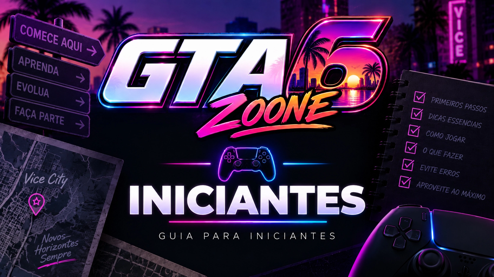

Começando em GTA VI
Primeiros passos, sistemas básicos e respostas para as dúvidas de quem está começando a explorar GTA VI.
Esta categoria será ampliada conforme pudermos verificar diretamente como cada sistema do jogo funciona. Os futuros guias terão instruções, screenshots, ligações com a Wiki, mapa e vídeos próprios sempre que essas informações forem úteis.
← Voltar para todos os GuiasINFORMAÇÃO VERIFICADA: não criaremos tutoriais baseados apenas em expectativas ou sistemas de jogos anteriores da série. Os artigos serão publicados quando houver conteúdo suficiente para explicar corretamente como GTA VI funciona.

Aprenda desde o começo
Aqui aparecerão os artigos individuais conforme forem produzidos.
Depois que os sistemas de GTA VI puderem ser testados, esta área poderá reunir tutoriais específicos. Em vez de uma única página enorme, cada dúvida importante poderá ter seu próprio guia.
O que poderá encontrar aqui
Estes blocos representam os tipos de dúvidas que poderão gerar guias específicos quando os sistemas puderem ser verificados.
Primeiros passos
Como começar e entender os principais sistemas.
Controles
Comandos e funções importantes do jogo.
Interface
Menus, indicadores e elementos da tela.
Mapa
Como navegar e entender os elementos do mapa.
Progressão
Como desbloqueios e avanço funcionam na campanha.
Veículos
Conceitos básicos para utilizar diferentes veículos.
Armas
Funcionamento básico de armas e equipamentos.
Atividades
Como descobrir e começar conteúdos opcionais.
Comece também pela Wiki
Enquanto os tutoriais práticos ainda estão sendo preparados, você já pode conhecer personagens, veículos, locais, armas e outras áreas de GTA VI.
Continue na Central de Guias
As categorias são interligadas para facilitar a navegação entre diferentes tipos de ajuda.
Dinheiro
Economia, ganhos e gastos.
Abrir categoria →GUIASMissões
Passo a passo da campanha.
Abrir categoria →GUIASVeículos
Como encontrar e utilizar.
Abrir categoria →GUIASArmas
Obtenção e funcionamento.
Abrir categoria →GUIASSegredos
Mistérios e descobertas.
Abrir categoria →GUIASEaster Eggs
Referências e homenagens.
Abrir categoria →GUIASGuia 100%
Complete tudo em GTA VI.
Abrir categoria →GUIASTodos os Guias
Voltar ao índice principal.
Abrir categoria →Não encontrou o que precisava?
Pesquise em todo o GTA6Zoone por personagens, veículos, locais, armas, notícias e guias.